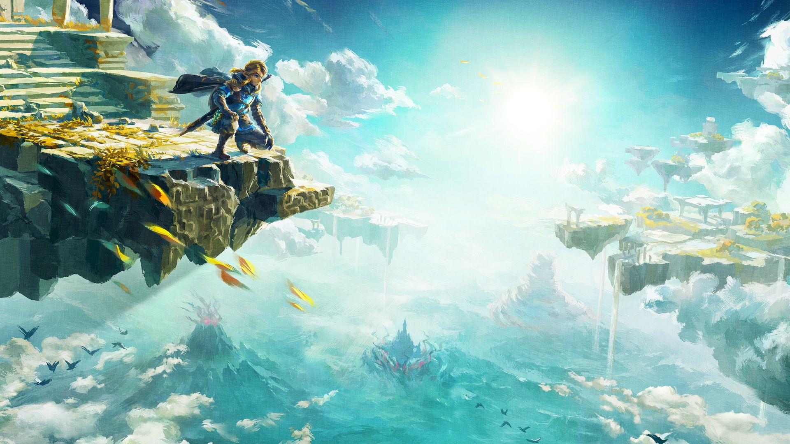
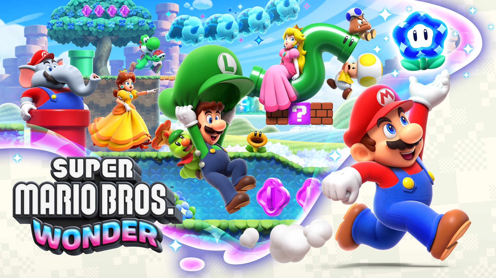
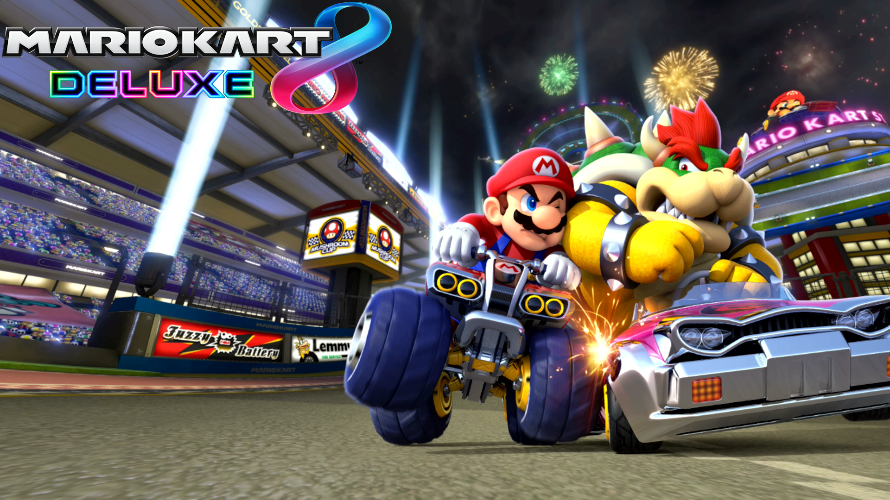

 "Tears of the Kingdom" is a poignant tale that unfolds within the intricate tapestry of a fictional realm. The tears referred to in the title symbolize not only the physical shedding of tears but also the emotional and metaphorical tribulations faced by the kingdom's inhabitants. The narrative delves into the complex dynamics of power, love, loss, and redemption, weaving a story that resonates with the universal human experience. The kingdom, once a bastion of prosperity and unity, becomes a stage for internal strife and external threats. The tears represent the collective sorrow of the people as they navigate the challenges brought forth by war, betrayal, and the passage of time. Each tear is a testament to the resilience and vulnerability of the characters, highlighting their humanity in the face of adversity. As the tears cascade, they also serve as a metaphorical cleansing, washing away the sins of the past and fostering the seeds of hope for a brighter future. The narrative explores the transformative power of tears, both in sorrow and in joy, and how they connect individuals across the kingdom. Through the tears, the characters discover profound truths about themselves and their interconnected fates, leading to a cathartic and emotionally charged resolution that leaves a lasting impact on the kingdom's legacy. In "Tears of the Kingdom," the tears are not just a symbol of sadness; they become a vital element in the characters' journeys, representing the ebb and flow of life, the inevitability of change, and the enduring spirit of resilience that defines the kingdom and its people.
 "Mario Wonder" introduces players to a whimsical and enchanting realm where the iconic video game character, Mario, embarks on a thrilling adventure beyond the familiar landscapes of the Mushroom Kingdom. This imaginative escapade unfolds in a world teeming with wonder and awe-inspiring surprises, offering players a fresh perspective on the beloved Mario universe. The game's design transcends the traditional platformer elements, immersing players in a captivating experience that evokes a sense of childlike marvel. As players navigate through this fantastical landscape, they encounter vibrant and surreal environments that showcase the creative prowess of the game developers. From towering floating islands to cascading waterfalls of neon colors, "Mario Wonder" invites players to explore a visual feast that goes beyond the boundaries of conventional Mario games. The wonder in the title extends not only to the visual spectacle but also to the ingenious level design, challenging puzzles, and unexpected twists that keep players on the edge of their seats. The soundtrack of "Mario Wonder" adds another layer of magic to the gaming experience. Composed with a blend of whimsical melodies and atmospheric tunes, the music enhances the sense of wonder, transporting players into a world where every jump and power-up is accompanied by a symphony of joy. The game's ability to evoke a genuine sense of wonder serves as a testament to the enduring creativity and innovation that the Mario franchise continues to bring to the gaming community. "Mario Wonder" stands as a testament to the timeless appeal of Mario, demonstrating that even after decades, the character can still inspire awe and captivate players with a sense of childlike wonder.
 "Mario Kart 8" is a thrilling and iconic installment in the long-running Mario Kart series, known for its exhilarating kart racing gameplay and vibrant, visually stunning tracks. Released for the Nintendo Wii U and later for the Nintendo Switch, the game builds upon the success of its predecessors while introducing new features and innovations that elevate the kart racing experience to new heights. One of the standout features of "Mario Kart 8" is its anti-gravity mechanics, allowing players to defy gravity and drive on walls and ceilings. This adds a dynamic and strategic element to the races, as players can strategically use the anti-gravity sections to gain advantages over their opponents. The tracks themselves are masterfully designed, featuring imaginative and diverse settings that showcase the creativity of the game developers. From soaring through the clouds to racing underwater, each track offers a unique and memorable experience. The game boasts an extensive roster of characters, ranging from the familiar faces of the Mario universe to unexpected additions like Link from "The Legend of Zelda" series. Each character has their own set of karts and bikes with varying stats, allowing players to customize their racing experience to suit their playstyle. The introduction of new items, such as the Super Horn and the Crazy Eight, adds an extra layer of strategy to the races, providing players with tools to gain an edge or defend against incoming attacks.